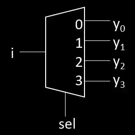
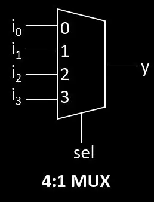

| Abkürzung | Bedeutung |
|---|---|
| ALU | Arithmetic Logic Unit (Arithmetisch-logische Einheit) |
| BIOS | Basic Input Output System (Grundlegendes Eingabe-Ausgabe-System) |
| CCS | Combined Charging System (Ladesystem für Elektrofahrzeuge) |
| CPU | Central Processing Unit (Zentrale Verarbeitungseinheit) |
| CSS | Cascading Style Sheets (Gestaltungssprache für Webdesign) |
| Demux | Demultiplexer  |
| DRAM | Dynamic RAM (langsamer und günstiger als SRAM, braucht mehr strom) |
| EEPROM | Electrically Erasable Programmable Read-Only Memory (Elektrisch löschbarer Speicher) |
| EPROM | Erasable Programmable Read-Only Memory (Mit UV-Licht löschbarer Speicher) |
| FIFO | First In First Out (Erstes rein, erstes raus) | FILO | First In Last Out (Erstes rein, letztes raus) |
| Flash | Flash-Speicher (Nichtflüchtiger Speicher) |
| GPU | Graphics Processing Unit (Grafikprozessor) |
| HDD | Hard Disk Drive (Mechanische Festplatte) |
| HTML | Hypertext Markup Language (Auszeichnungssprache für Webseiten) |
| LSB | Least Significant Bit (Niederwertigstes Bit) |
| Mux | Multiplexer  |
| MSB | Most Significant Bit (Höchstwertiges Bit) |
| PIC | Peripheral Interface Controller (Mikrocontroller-Familie) |
| PLD | Programmable Logic Device (Programmierbare Logikschaltung) |
| RAM | Random Access Memory (Flüchtiger Speicher) |
| RISC | Reduced Instruction Set Computer (Rechner mit reduziertem Befehlssatz) |
| ROM | Read-Only Memory (Nur-Lese-Speicher) |
| SRAM | Static RAM (schneller und teurer als DRAM) |
| SSD | Solid State Drive (Halbleiterlaufwerk) |
| TTL | Transistor-Transistor logik |
| UML | Unified Modeling Language (Objektorientierte Sprache für Spezifizierung, Erstellung, Bearbeitung und Visualisierung) |
| UNIX | Betriebssystemfamilie |
| VHDL | VHSIC Hardware Description Language (Hardwarebeschreibungssprache) |
| VLSI | Very Large Scale Integration (Sehr hohe Integrationsdichte) |